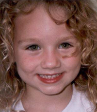
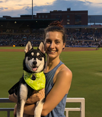
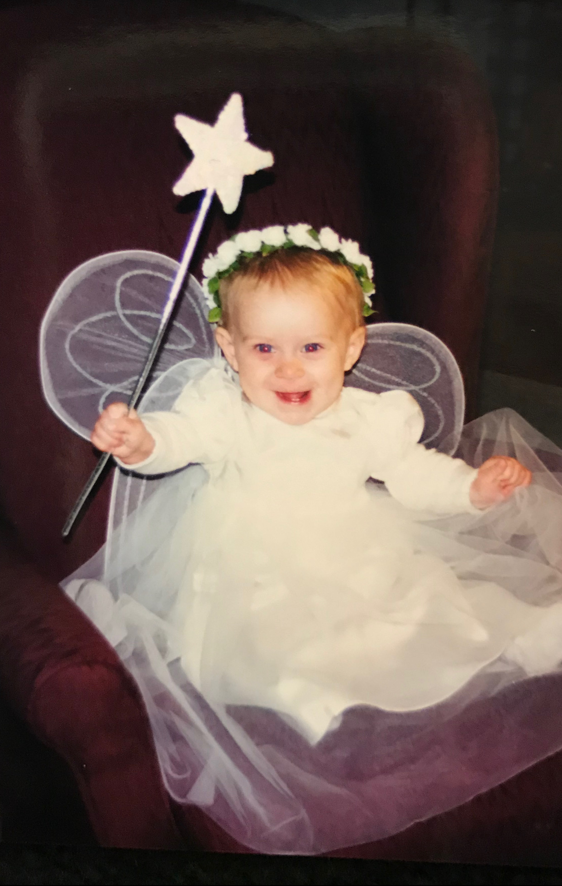
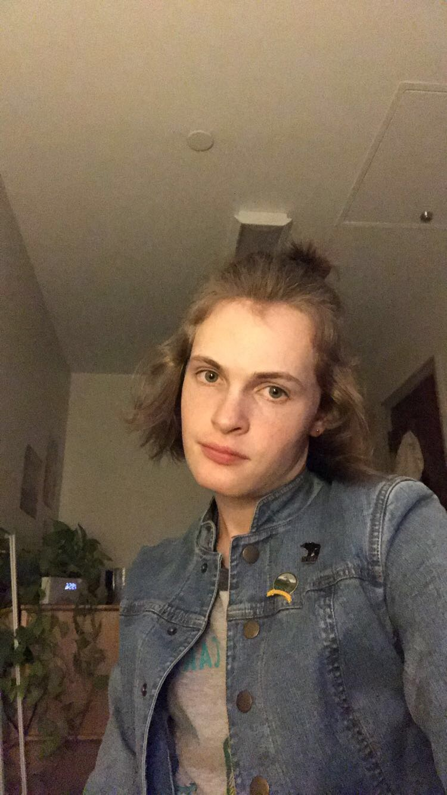

People

 Zachary T. Kern |
Principal Investigator |
 Vitaly Bergelson |
 |
Postdoctoral Researcher |
 |

|
Postdoctoral Researcher |
 |
 |
Postdoctoral Researcher |
 |
 |
5th year Graduate Student |
 |
|  |
4th year Graduate Student |
 |
 |
3rd year Graduate Student |
 |
 |
Research Associate |
|
 |
Lab Manager |
|
|
Lab Technician |
||
 |
Research Assistant |
 |
|
Research Assistant |
||
|
Research Assistant |
 |
|
 |
Research Assistant |
 |
 |
Research Assistant |
|
|  |
Research Assistant |
 |
 |
Research Assistant |
 |
Lab Alumni (Where they are now)
- Aahnix Bathurst, Project Manager, 2019-2020
- Irene Tang, Lab Manager, 2019-2020 (PhD Student at University of Chicago in Linguistics)
- Sarah Yang '20, Research Assistant, 2018-2020 (Senior Clinical Research Specialist, Duke Center for Autism and Brain Development)
- Jessica Marlow '20, Research Assistant, 2019-2020 (Master's of Science student in Global Health at National Taiwan University)
- Sophie Hurewitz '22, Research Assistant, 2019-2020
- Georgia Price '22, Research Assistant, 2019
- Gladys Baudet, lab technician, 2018-2019 (AI Engineer at AnotherBrain)
- Estelle He '20, programming research assistant, 2016-2019
- Webster Bei '20, programming research assistant, 2016-2019
- Meghan Beck, co-op visiting research assistant, 2019 (Research Assistant Co-op at Institute of Biophysics and Biomedical Engineering)
- Danielle Mayorga-Young '19, research assistant, 2017-2019 (Clinical Research Specialist at Duke)
- Chandler Richards '19, research assistant, 2017-2019 (IRTA Research Assistant at NIMH-SFIM)
- Katya Khlystova '19, research assistant, 2017-2019 (Ph.D. candidate at UCLA)
- Emma Zhang, NCSSM high school research assistant, 2018 (Undergraduate at UNC)
- Natasha Derezinski-Choo '18, research assistant, 2016-2018 (Fullbright recipient, "Many Medicines and Many Languages: The Sociolinguistic Underpinnings of Medical Pluralism." )
- Micaela Brewington, research assistant, 2016-2018 (Public Health Analyst at RTI International)
- Naseem Dillman-Hasso, summer research intern, 2018 (Lab Manager of the Perception Lab at Carleton College)
- Natasha Vernooij, summer research intern, 2018 (Ph.D. candidate at the University of Michigan; Studying multilingual cognition)
- Ellie Breitfeld, summer research intern, 2018 (Psychology Ph.D. candidate at University of Wisconsin-Madison’s)
- Savanna Groft, research assistant, 2016-2018 (Clinical Medical Interpreter at Duke)
- Erich Hess, high school research assistant, 2018 (Undergraduate at UNC)
- Andrei Amatuni, lab technician, 2015-2018 (Ph.D. candiate at Indiana University in the Department of Psychological and Brain Sciences)
- Afua Ansah, research assistant, 2016-2018 (Ohio-Illinois District Youth Assistant Secretary, Presbyterian Church of Ghana)
- Angela Tawfik, research assistant, 2017-2018 (Senior Research Fellow at Duke University)
- Reena Jasani, research assistant, 2016-2017 (Medical Student at The University of Texas Southwestern Medical School)
- Alexis Aberman, high school research assistant, 2017 (Undergraduate at Cornell University)
- Maia Donald, high school research assistant, 2017 (Undergraduate at Barnard College)
- Kelsey Shelofsky, research assistant, 2017 (Clinical Research Coordinator at Massachusetts General Hospital, Dept. of Neurology)
- Claire Patrick, high school research assistant, 2017
- Dr. Catherine Laing, postdoctoral researcher, 2016-2017 (Lecturer in the Centre for Language and Communication Research at Cardiff University, Wales)
- Emmaline Drew, graduate practicum student, 2017 (Doctoral student in cognitive psychology at Duke University)
- Hannah Ballock, research assistant and independent study student, 2016-2017
- Ryan Bloom, programming research assistant, 2017 (Associate Consultant / Software Engineer at Levvel.io)
- Nick Groszewski, programming research assistant, 2017 (Senior Associate Data Engineer at Capital One)
- Liwen Zhang, programming research assistant, 2016-2017 (Data Scientist at GM Financial)
- Cristopher Alvarado, high school research assistant, 2016 (Undergraduate at Swarthmore College)